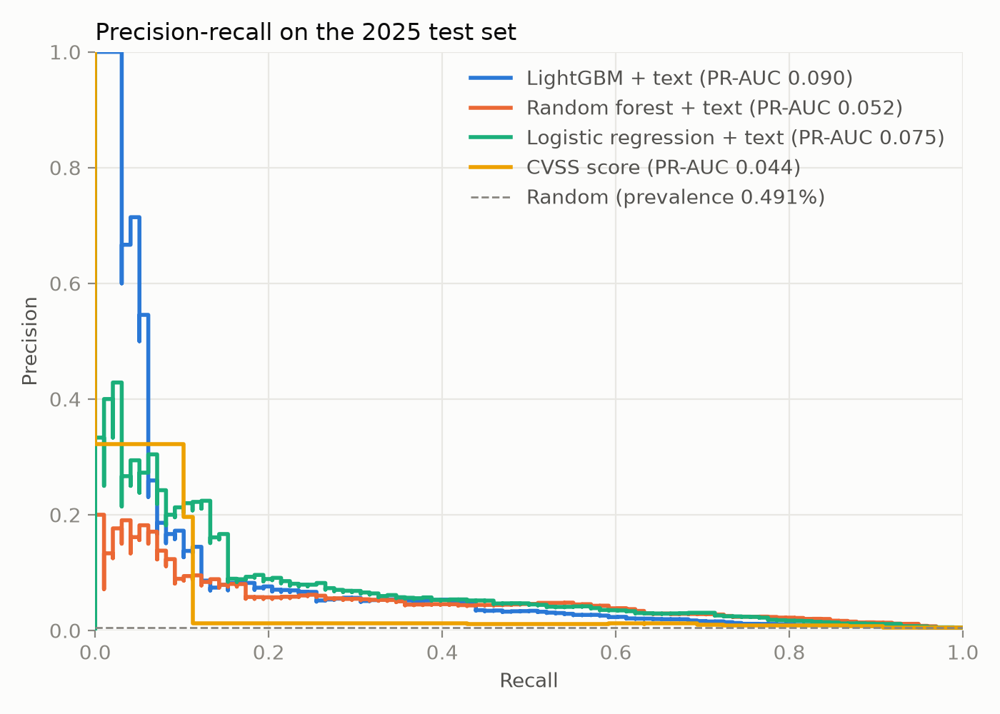
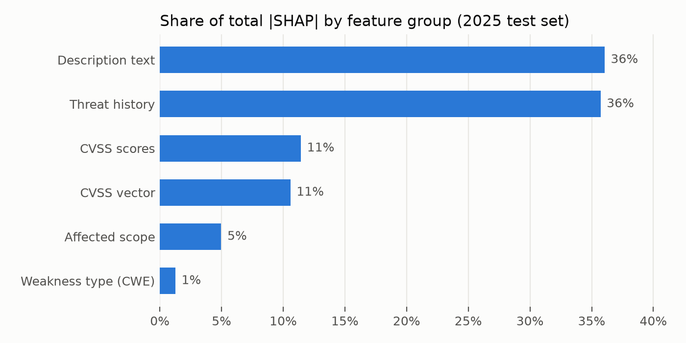
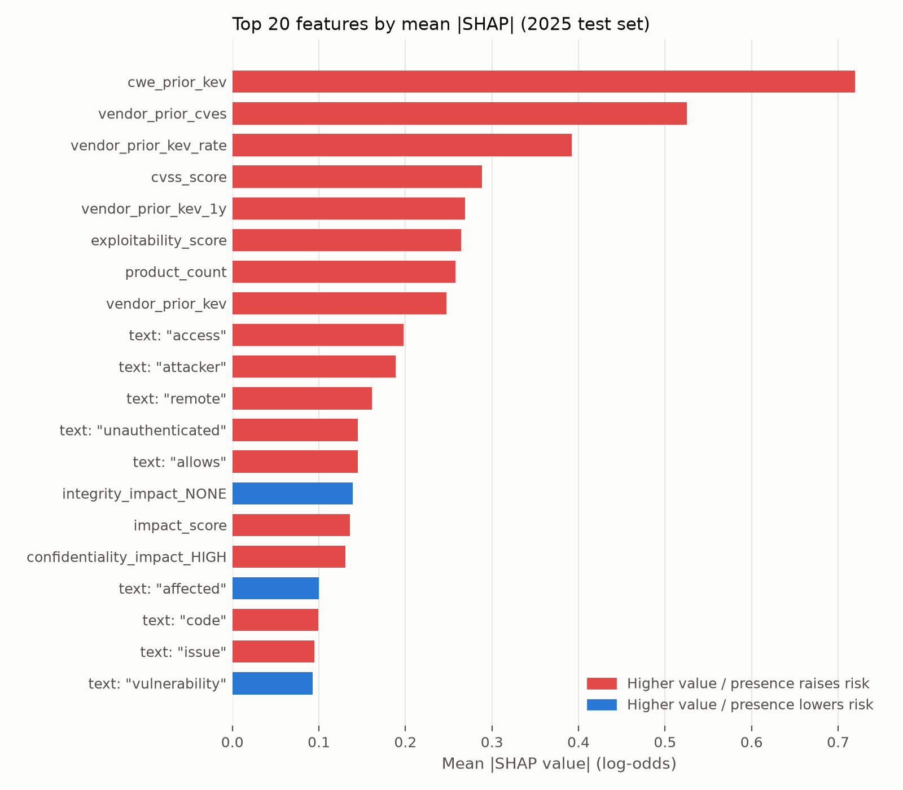
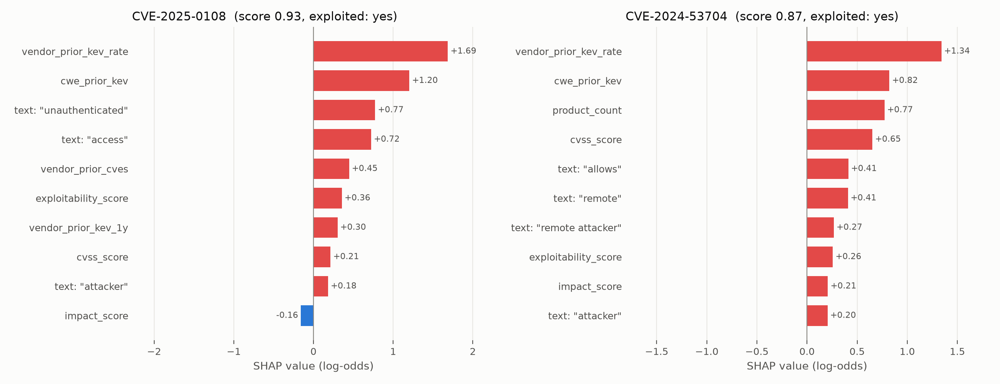
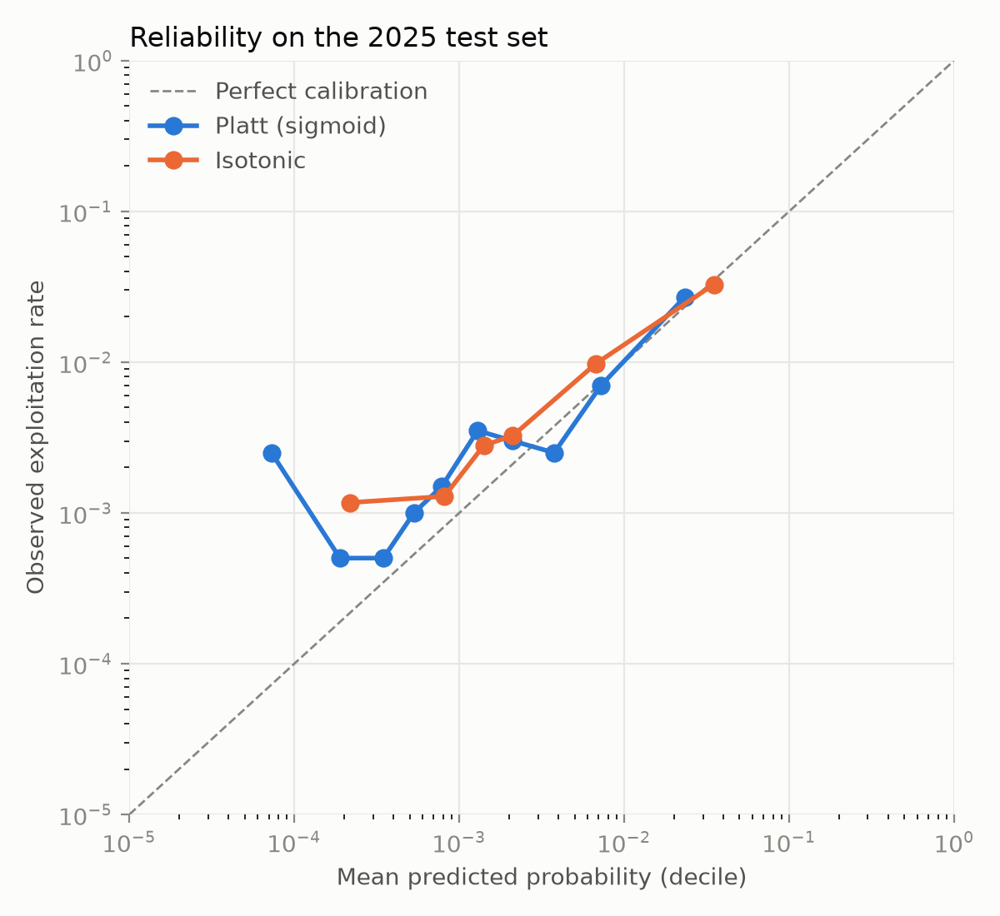

<title>Threat-Aware Digital Asset Exposure Prediction</title>
<link rel="preconnect" href="https://fonts.googleapis.com">
<link rel="stylesheet" href="https://fonts.googleapis.com/css2?family=IBM+Plex+Mono:wght@400;500&family=IBM+Plex+Sans+Condensed:wght@500;600;700&family=IBM+Plex+Sans:ital,wght@0,400;0,500;0,600;1,400&display=swap">
<style>
/* Layout: a single technical-report column (~70ch) with full-width tables
   and figures; summary figures first, then method, evidence, limits. */
:root {
  --paper: #f6f7f5;
  --surface: #ffffff;
  --ink: #17202a;
  --ink-2: #4a5561;
  --ink-3: #7a8591;
  --rule: #dfe3e2;
  --accent: #1d5c73;
  --accent-soft: #e3eef1;
  --critical: #b8322f;
  --critical-soft: #f8e5e3;
  --good: #2d7a3f;
  --plate: #ffffff;
  --display: "IBM Plex Sans Condensed", "Arial Narrow", Arial, sans-serif;
  --body: "IBM Plex Sans", "Segoe UI", Arial, sans-serif;
  --mono: "IBM Plex Mono", Consolas, "Courier New", monospace;
}
@media (prefers-color-scheme: dark) {
  :root:not([data-theme="light"]) {
    --paper: #12171c; --surface: #1a2128; --ink: #e6eaee; --ink-2: #b2bcc6; --ink-3: #85909b;
    --rule: #2c353e; --accent: #6fb3cc; --accent-soft: #1b3440; --critical: #ef7a74;
    --critical-soft: #3a2224; --good: #7cc68c; --plate: #f4f5f3; color-scheme: dark;
  }
}
:root[data-theme="dark"] {
  --paper: #12171c; --surface: #1a2128; --ink: #e6eaee; --ink-2: #b2bcc6; --ink-3: #85909b;
  --rule: #2c353e; --accent: #6fb3cc; --accent-soft: #1b3440; --critical: #ef7a74;
  --critical-soft: #3a2224; --good: #7cc68c; --plate: #f4f5f3; color-scheme: dark;
}

* { box-sizing: border-box; }
body {
  background: var(--paper); color: var(--ink);
  font: 400 16px/1.65 var(--body);
  padding-inline: 20px; padding-block: 40px 72px;
}
main { max-width: 860px; margin: 0 auto; display: flex; flex-direction: column; gap: 56px; }
section { display: flex; flex-direction: column; gap: 18px; min-width: 0; }
h1, h2, h3 { font-family: var(--display); text-wrap: balance; margin: 0; line-height: 1.15; }
h1 { font-size: clamp(2rem, 5vw, 2.9rem); font-weight: 700; letter-spacing: -0.01em; }
h2 { font-size: 1.6rem; font-weight: 600; padding-top: 14px; border-top: 2px solid var(--ink); }
h3 { font-size: 1.15rem; font-weight: 600; }
p { margin: 0; max-width: 68ch; }
ul, ol { margin: 0; padding-left: 1.3em; max-width: 68ch; display: flex; flex-direction: column; gap: 6px; }
code, .mono { font-family: var(--mono); font-size: 0.88em; }
code { background: var(--accent-soft); padding: 1px 5px; border-radius: 3px; }
strong { font-weight: 600; }
a { color: var(--accent); }
:focus-visible { outline: 2px solid var(--accent); outline-offset: 2px; }

.eyebrow {
  font: 500 0.78rem/1 var(--mono); letter-spacing: 0.08em; text-transform: uppercase;
  color: var(--accent);
}
header { display: flex; flex-direction: column; gap: 16px; }
.lede { font-size: 1.13rem; color: var(--ink-2); }
.question {
  border-left: 3px solid var(--accent); padding: 4px 0 4px 16px;
  font-family: var(--display); font-size: 1.25rem; font-weight: 500; max-width: 60ch;
}
.meta { display: flex; flex-wrap: wrap; gap: 8px 24px; font: 0.85rem/1.4 var(--mono); color: var(--ink-3); }

.answer {
  background: var(--surface); border: 1px solid var(--rule); border-radius: 6px;
  padding: 22px 24px; display: flex; flex-direction: column; gap: 12px;
}
.answer p { max-width: none; }

.figures { display: grid; grid-template-columns: repeat(auto-fit, minmax(180px, 1fr)); gap: 12px; }
.figure-stat {
  background: var(--surface); border: 1px solid var(--rule); border-radius: 6px;
  padding: 16px; display: flex; flex-direction: column; gap: 6px; min-width: 0;
}
.figure-stat .value {
  font: 600 2rem/1 var(--display); color: var(--ink); font-variant-numeric: tabular-nums;
}
.figure-stat .value small { font-size: 1rem; color: var(--ink-3); font-weight: 500; }
.figure-stat .label { font-size: 0.88rem; color: var(--ink-2); line-height: 1.4; }

.pipeline { list-style: none; padding: 0; counter-reset: step; display: grid;
  grid-template-columns: repeat(auto-fit, minmax(230px, 1fr)); gap: 10px; max-width: none; }
.pipeline li {
  counter-increment: step; background: var(--surface); border: 1px solid var(--rule);
  border-radius: 6px; padding: 12px 14px 12px 46px; position: relative; font-size: 0.92rem; line-height: 1.45;
}
.pipeline li::before {
  content: counter(step); position: absolute; left: 14px; top: 12px;
  font: 600 0.85rem/1.5 var(--mono); color: var(--accent);
}
.pipeline li b { display: block; font-weight: 600; }

.table-wrap { overflow-x: auto; border: 1px solid var(--rule); border-radius: 6px; background: var(--surface); }
table { border-collapse: collapse; width: 100%; font-size: 0.9rem; font-variant-numeric: tabular-nums; }
th, td { padding: 9px 12px; text-align: right; border-bottom: 1px solid var(--rule); white-space: nowrap; }
th:first-child, td:first-child { text-align: left; }
thead th {
  font: 500 0.74rem/1.3 var(--mono); letter-spacing: 0.04em; text-transform: uppercase;
  color: var(--ink-3); background: var(--paper); white-space: normal; vertical-align: bottom;
}
tbody tr:last-child td { border-bottom: 0; }
tr.best td { background: var(--accent-soft); font-weight: 600; }
tr.muted td { color: var(--ink-3); }
td.left { text-align: left; white-space: normal; }
.caption { font-size: 0.85rem; color: var(--ink-3); max-width: 75ch; }

figure { margin: 0; display: flex; flex-direction: column; gap: 8px; }
figure .plate { background: var(--plate); border: 1px solid var(--rule); border-radius: 6px; padding: 10px; }
figure img { display: block; width: 100%; height: auto; }
figcaption { font-size: 0.85rem; color: var(--ink-3); }
.two { display: grid; grid-template-columns: repeat(auto-fit, minmax(300px, 1fr)); gap: 16px; }

.callout {
  border-radius: 6px; padding: 14px 16px; display: flex; flex-direction: column; gap: 6px;
  background: var(--accent-soft); font-size: 0.95rem;
}
.callout.warn { background: var(--critical-soft); }
.callout .tag { font: 500 0.74rem/1 var(--mono); letter-spacing: 0.06em; text-transform: uppercase; color: var(--accent); }
.callout.warn .tag { color: var(--critical); }
.callout p { max-width: none; }

.level { font: 500 0.78rem/1 var(--mono); padding: 3px 7px; border-radius: 3px; }
.level.critical { background: var(--critical-soft); color: var(--critical); }
.level.high { background: var(--accent-soft); color: var(--accent); }

pre {
  margin: 0; background: var(--surface); border: 1px solid var(--rule); border-radius: 6px;
  padding: 14px 16px; overflow-x: auto; font: 0.85rem/1.6 var(--mono); color: var(--ink);
}
footer { font-size: 0.85rem; color: var(--ink-3); border-top: 1px solid var(--rule); padding-top: 16px; }
</style>

<main>

<header>
  <span class="eyebrow">Final-year cybersecurity research project · results report</span>
  <h1>Threat-Aware Digital Asset Exposure Prediction</h1>
  <p class="lede">A machine-learning system that predicts which vulnerabilities, and therefore which
  organisational assets, are likely to become actively exploited in the next 12 months, instead of only
  listing what is vulnerable today.</p>
  <p class="question">Can machine learning predict future cyber exposure risks of organisational digital
  assets using asset and vulnerability information?</p>
  <div class="meta">
    <span>Data: NVD 2002–2026 · CISA KEV to 2026-09-22</span>
    <span>Test year: 2025 (held out)</span>
    <span>Report date: 2026-10-04</span>
  </div>
</header>

<section>
  <div class="answer">
    <span class="eyebrow">Answer</span>
    <p><strong>Yes, with measurable but bounded accuracy.</strong> Trained only on information available
    when a CVE is published, the best model ranks 2025 vulnerabilities by future exploitation about
    <strong>18 times better than random and twice as well as CVSS</strong> (PR-AUC 0.090 vs 0.044). Reviewing
    the top 5% of its ranking catches 44% of the CVEs that were later exploited, against 16% for CVSS.
    Its calibrated probabilities match real exploitation rates across 2022–2025.</p>
    <p>At asset level, a backtest on a synthetic 30-asset organisation showed that
    <strong>most future exposure (38 of 42 newly exploited CVEs) came from vulnerabilities that did not yet
    exist</strong> at assessment time. Combining CVE predictions with each product's recent exploitation
    history ranked the assets that became exposed above all others in that test.</p>
  </div>

  <div class="figures">
    <div class="figure-stat"><span class="value">0.090</span>
      <span class="label">PR-AUC on 2025 CVEs (CVSS 0.044, random 0.005)</span></div>
    <div class="figure-stat"><span class="value">44<small>%</small></span>
      <span class="label">of later-exploited CVEs found in the top 5% of the ranking (CVSS 16%)</span></div>
    <div class="figure-stat"><span class="value">79 <small>vs 98</small></span>
      <span class="label">exploited CVEs expected vs observed in 2025 after calibration</span></div>
    <div class="figure-stat"><span class="value">1.00</span>
      <span class="label">asset-level ROC-AUC in the backtest, model + product history (n = 30)</span></div>
  </div>
</section>

<section>
  <h2>System</h2>
  <p>The pipeline runs end to end from raw public data with one command
  (<code>python run_pipeline.py</code>, about 35 minutes) and reproduces every number in this report.</p>
  <ol class="pipeline">
    <li><b>Vulnerability data</b>All NVD JSON 2.0 feeds: 382,538 non-rejected CVEs with CVSS, CWE, CPE and descriptions.</li>
    <li><b>Threat data</b>CISA Known Exploited Vulnerabilities catalogue: 1,721 entries, all matched to NVD.</li>
    <li><b>Future-risk labels</b><code>future_kev</code> = added to KEV within 12 months after publication.</li>
    <li><b>Feature engineering</b>CVSS, CWE, description text and threat history, all as of publication day.</li>
    <li><b>Machine learning</b>Logistic regression, random forest and LightGBM on a temporal split.</li>
    <li><b>Explainable AI</b>TreeSHAP values for every prediction, globally and per CVE.</li>
    <li><b>Calibration and tiers</b>Platt scaling and budget-based risk tiers fixed on 2024.</li>
    <li><b>Asset exposure</b>Nmap or inventory → version-aware CVE matching → asset scores.</li>
    <li><b>Dashboard</b>Streamlit: ranked assets, per-CVE explanations, model evidence, backtest.</li>
  </ol>
</section>

<section>
  <h2>Temporal design and leakage control</h2>
  <p>The study asks what could have been predicted at the time, so every split and feature respects
  publication time. CVEs are included from the KEV launch (2021-11-03), so every 12-month follow-up lies
  inside the period KEV existed, up to 2025-08-27, so every follow-up is complete.</p>
  <div class="table-wrap"><table>
    <thead><tr><th>Split</th><th>Published</th><th>CVEs</th><th>Exploited within 12 months</th><th>Rate</th></tr></thead>
    <tbody>
      <tr><td>Train</td><td>2021-11-03 – 2023-12-31</td><td>57,093</td><td>183</td><td>0.32%</td></tr>
      <tr><td>Validation (selection, calibration)</td><td>2024</td><td>32,144</td><td>109</td><td>0.34%</td></tr>
      <tr><td>Test (used once)</td><td>2025-01-01 – 2025-08-27</td><td>19,945</td><td>98</td><td>0.49%</td></tr>
    </tbody>
  </table></div>
  <ul>
    <li>CVEs already in KEV on or before their publication day (162) are excluded rather than labelled
    negative: there was nothing left to predict.</li>
    <li>Threat-history features count only KEV additions and CVEs <em>strictly before</em> the publication day.</li>
    <li>Sentences stating exploitation status ("Apple is aware of a report that this issue may have been
    exploited") are removed from descriptions. They appeared in 11% of exploited and 0.4% of other CVEs and
    would reveal the label.</li>
    <li>Evaluation is restricted to CVEs NVD has analysed. In 2024–2025 NVD analysed KEV-listed CVEs first, so
    whether vendor/product data is present was itself a hint about the label (0% missing for exploited CVEs, 20–35% for others).</li>
  </ul>
</section>

<section>
  <h2>Prediction results</h2>
  <p>All models were tuned and given decision thresholds on 2024, then evaluated once on 2025. Accuracy is
  not reported: with 0.49% positives, labelling everything "not exploited" scores 99.5%.</p>
  <div class="table-wrap"><table>
    <thead><tr><th>Model (2025 test set)</th><th>PR-AUC</th><th>95% CI</th><th>ROC-AUC</th><th>Recall @ top 1%</th><th>Recall @ top 5%</th></tr></thead>
    <tbody>
      <tr class="best"><td>LightGBM + description text</td><td>0.090</td><td>0.045–0.155</td><td>0.80</td><td>15%</td><td>44%</td></tr>
      <tr><td>Logistic regression + text</td><td>0.075</td><td>0.045–0.138</td><td>0.86</td><td>19%</td><td>47%</td></tr>
      <tr><td>Random forest + text</td><td>0.052</td><td>0.034–0.089</td><td>0.87</td><td>16%</td><td>45%</td></tr>
      <tr><td>LightGBM, tabular only</td><td>0.049</td><td>0.026–0.100</td><td>0.75</td><td>14%</td><td>31%</td></tr>
      <tr><td>Logistic regression, tabular only</td><td>0.053</td><td>0.034–0.087</td><td>0.84</td><td>20%</td><td>47%</td></tr>
      <tr><td>Random forest, tabular only</td><td>0.054</td><td>0.030–0.102</td><td>0.82</td><td>13%</td><td>40%</td></tr>
      <tr class="muted"><td>CVSS score only (baseline)</td><td>0.044</td><td>0.019–0.092</td><td>0.73</td><td>12%</td><td>16%</td></tr>
      <tr class="muted"><td>Random</td><td>0.005</td><td></td><td>0.50</td><td>1%</td><td>5%</td></tr>
    </tbody>
  </table></div>
  <p class="caption">PR-AUC (average precision) is the primary metric because it measures how well the rare
  positive class is ranked. Confidence intervals: 1,000 bootstrap resamples of the test set.</p>

  <figure>
    <div class="plate"></div>
    <figcaption>Precision-recall on 2025 CVEs. CVSS keeps some precision only for its top scores (10.0) and
    collapses after about 11% recall.</figcaption>
  </figure>

  <h3>Class imbalance</h3>
  <p>Imbalance handling was treated as a tuned choice, not assumed. Best validation PR-AUC (2024) per strategy:</p>
  <div class="table-wrap"><table>
    <thead><tr><th>Model, feature set</th><th>No adjustment</th><th>Class weighting</th><th>Undersampling 10:1</th></tr></thead>
    <tbody>
      <tr><td>LightGBM + text</td><td>0.054</td><td>0.024</td><td><strong>0.056</strong></td></tr>
      <tr><td>Logistic regression + text</td><td>0.061</td><td><strong>0.062</strong></td><td>0.053</td></tr>
      <tr><td>Random forest + text</td><td>0.030</td><td><strong>0.038</strong></td><td>0.035</td></tr>
      <tr><td>LightGBM, tabular</td><td>0.031</td><td>0.018</td><td><strong>0.036</strong></td></tr>
    </tbody>
  </table></div>
  <p class="caption">Full class weighting (about 310:1) made boosting worse by overfitting the 183 training
  positives; undersampling suited trees, weighting suited the linear model.</p>
</section>

<section>
  <h2>What drives the predictions</h2>
  <p>SHAP values for the selected model show that CVSS, the basis of traditional prioritisation, accounts
  for about 22% of the model's reasoning. Exploitation history and the description text account for 72%.</p>
  <div class="two">
    <figure>
      <div class="plate"></div>
      <figcaption>Share of total |SHAP| by feature group, 2025 test set.</figcaption>
    </figure>
    <figure>
      <div class="plate"></div>
      <figcaption>Top features. Red: higher values raise predicted risk.</figcaption>
    </figure>
  </div>
  <figure>
    <div class="plate"></div>
    <figcaption>Individual explanations for two correctly ranked 2025 CVEs (PAN-OS authentication bypass,
    SonicWall SSL-VPN authentication bypass).</figcaption>
  </figure>
</section>

<section>
  <h2>Calibration and risk tiers</h2>
  <p>Raw scores from the undersampled model rank well but overstate probability. Platt scaling, fitted on
  2024 and chosen in advance, turns them into probabilities. Tiers are review budgets fixed on 2024.</p>
  <div class="two">
    <div class="table-wrap"><table>
      <thead><tr><th>2025 test set</th><th>Brier</th><th>ECE</th><th>Expected exploited</th></tr></thead>
      <tbody>
        <tr class="muted"><td>Uncalibrated</td><td>0.0258</td><td>0.0783</td><td>1,655</td></tr>
        <tr class="best"><td>Platt scaling (used)</td><td>0.0047</td><td>0.0012</td><td>79</td></tr>
        <tr><td>Isotonic (comparison)</td><td>0.0047</td><td>0.0013</td><td>78</td></tr>
        <tr class="muted"><td>Observed</td><td></td><td></td><td>98</td></tr>
      </tbody>
    </table></div>
    <figure>
      <div class="plate"></div>
      <figcaption>Reliability by decile, 2025 test set.</figcaption>
    </figure>
  </div>
  <div class="table-wrap"><table>
    <thead><tr><th>Risk tier (2025)</th><th>Share of CVEs</th><th>Hit rate</th><th>Share of exploited caught</th><th>Lift vs random</th></tr></thead>
    <tbody>
      <tr><td><span class="level critical">Critical</span> top 1%</td><td>1.0%</td><td>7.4%</td><td>15%</td><td>15.0×</td></tr>
      <tr><td><span class="level high">High</span> next 4%</td><td>4.3%</td><td>3.2%</td><td>29%</td><td>6.6×</td></tr>
      <tr><td>Medium, next 15%</td><td>19.7%</td><td>0.7%</td><td>29%</td><td>1.4×</td></tr>
      <tr><td>Low, remaining 80%</td><td>74.9%</td><td>0.2%</td><td>28%</td><td>0.4×</td></tr>
    </tbody>
  </table></div>
  <p class="caption">Reviewing Critical and High (5% of new CVEs) covers 44% of those later exploited. 28% of
  exploited CVEs still fall in Low.</p>
</section>

<section>
  <h2>From vulnerabilities to assets</h2>
  <p>Assets come from an Nmap service scan (<code>nmap -sV -oX</code>) or an asset database. Each service's
  CPE is matched against 2.5 million NVD version ranges, so an asset receives only CVEs that affect its
  installed version. Every matched CVE is classed as known exploited (in KEV now), predicted (published in the
  last 12 months, scored by the model) or older. Asset scores combine:</p>
  <ul>
    <li><strong>Known CVEs:</strong> the sum of calibrated probabilities for recent matched CVEs.</li>
    <li><strong>Not-yet-published CVEs:</strong> each installed product's KEV additions over the past 12 months,
    as an estimate of how often new exploited flaws appear in it.</li>
    <li><strong>Business context:</strong> priority = threat × criticality × internet exposure. These weights are
    stated design assumptions, not learned values.</li>
  </ul>

  <h3>Backtest on a synthetic organisation</h3>
  <p>Until the VMware lab is built, a synthetic organisation of 30 assets (DMZ, servers, workstations, a
  management firewall) stands in. Installed versions are not invented: each asset has a patch-hygiene profile
  (30, 120, 270 or 540 days behind) and runs the real NVD fix version as of that date. The organisation was
  assessed as of 2025-08-27 and compared with KEV additions over the following year.</p>
  <div class="table-wrap"><table>
    <thead><tr><th>Asset ranking method</th><th>ROC-AUC: exposed via a scored CVE (16 of 30)</th><th>ROC-AUC: exposed via any CVE (19 of 30)</th></tr></thead>
    <tbody>
      <tr class="best"><td>Combined: model + product history</td><td>0.991</td><td>1.000</td></tr>
      <tr><td>Product KEV history only</td><td>0.989</td><td>1.000</td></tr>
      <tr><td>Model: highest CVE probability</td><td>0.996</td><td>0.931</td></tr>
      <tr><td>Model: expected exploited CVEs</td><td>0.987</td><td>0.921</td></tr>
      <tr class="muted"><td>Recent CVE count (baseline)</td><td>0.953</td><td>0.852</td></tr>
      <tr class="muted"><td>Highest CVSS (baseline)</td><td>0.913</td><td>0.892</td></tr>
    </tbody>
  </table></div>
  <div class="callout">
    <span class="tag">Key finding</span>
    <p>Of the 42 CVEs newly exploited on these assets during the follow-up year, <strong>38 were published after
    the assessment date</strong>, most as zero-days added to KEV within days, such as the September 2025 Cisco
    ASA flaws on the internal firewall. Predicting individual CVEs can cover only about a tenth of future
    exposure; tracking which products attackers keep targeting covers the rest. This supports a
    <em>threat-aware</em> rather than vulnerability-only approach.</p>
  </div>
  <p class="caption">The asset results are illustrative: 30 assets, a few widely shared Windows CVEs drive many
  outcomes, and installed versions are assumed unchanged during the follow-up year. At CVE level the backtest
  had only 4 exploited CVEs among 1,048 scored, too few for a conclusion.</p>
</section>

<section>
  <h2>Prediction drift</h2>
  <p>Comparing expected and observed KEV additions per half-year shows the model is well calibrated through
  the evaluated period, then drifts upward for 2026 CVEs, when analysed-CVE volume jumped by about 45% and
  vendor exploitation histories kept growing.</p>
  <div class="table-wrap"><table>
    <thead><tr><th>CVEs published</th><th>Role</th><th>CVEs</th><th>Expected exploited</th><th>Observed</th><th>Expected ÷ observed</th></tr></thead>
    <tbody>
      <tr><td>2022 H1</td><td class="left">train</td><td>12,362</td><td>34.0</td><td>50</td><td>0.68</td></tr>
      <tr><td>2022 H2</td><td class="left">train</td><td>12,710</td><td>29.5</td><td>23</td><td>1.28</td></tr>
      <tr><td>2023 H1</td><td class="left">train</td><td>14,107</td><td>39.2</td><td>43</td><td>0.91</td></tr>
      <tr><td>2023 H2</td><td class="left">train</td><td>14,709</td><td>51.6</td><td>56</td><td>0.92</td></tr>
      <tr><td>2024 H1</td><td class="left">validation</td><td>17,198</td><td>51.8</td><td>44</td><td>1.18</td></tr>
      <tr><td>2024 H2</td><td class="left">validation</td><td>14,986</td><td>58.8</td><td>65</td><td>0.90</td></tr>
      <tr><td>2025 H1</td><td class="left">test</td><td>15,342</td><td>58.3</td><td>80</td><td>0.73</td></tr>
      <tr class="muted"><td>2026 H1</td><td class="left">after evaluation, follow-up incomplete</td><td>22,382</td><td>133.4</td><td>80 so far</td><td>1.67</td></tr>
    </tbody>
  </table></div>
  <p class="caption">A deployed system would retrain and recalibrate on recent labelled data at regular intervals;
  the drift check (<code>python -m src.models.monitor_drift</code>) is part of the pipeline, and the dashboard
  warns when an assessment covers CVEs beyond the evaluated period.</p>
</section>

<section>
  <h2>Limitations</h2>
  <ul>
    <li><strong>Hindsight in NVD fields.</strong> CVSS, CWE and CPE data reflect the current NVD record, which may
    have been revised after exploitation became known. Only the description could be cleaned.</li>
    <li><strong>KEV is a proxy for exploitation.</strong> It lists exploitation confirmed by CISA, with a US-government
    focus and a reporting delay; other exploited CVEs count as negatives.</li>
    <li><strong>Few positive events.</strong> 98 exploited CVEs in the test year give wide confidence intervals.</li>
    <li><strong>Version matching.</strong> Distribution backports (patched without a version change) cause
    over-matching, and NVD configurations that only apply on specific platforms are treated as always applying.</li>
    <li><strong>Asset aggregation.</strong> Combining CVE probabilities assumes independence; business-context
    weights are assumptions; the asset backtest uses a synthetic organisation of 30 assets.</li>
    <li><strong>Drift.</strong> Scores for CVEs published after August 2025 run high; the model needs periodic
    retraining before operational use.</li>
  </ul>
</section>

<section>
  <h2>Remaining work</h2>
  <ul>
    <li>Build the VMware lab targets (current Ubuntu and Windows services), scan them from Kali with
    <code>nmap -sV -oX</code> and assess the scans in the dashboard.</li>
    <li>Retrain and recalibrate on the most recent complete year before any operational demonstration.</li>
    <li>Optional extensions: compare against EPSS, add exploit-code availability as a time-stamped feature,
    and model patching behaviour during the follow-up year.</li>
  </ul>
</section>

<section>
  <h2>Reproducing the results</h2>
<pre>python -m venv .venv
.venv\Scripts\python.exe -m pip install -r requirements.txt
python run_pipeline.py                 # 12 steps, raw NVD/KEV data to all results
streamlit run src\dashboard\app.py     # http://localhost:8501</pre>
  <p class="caption">Outputs: <code>results/</code> (metrics, models, SHAP, calibration, monitoring, lab backtest)
  and <code>data/lab/lab_environment.db</code>. A full rebuild on 2026-10-04 reproduced every reported figure exactly.</p>
</section>

<footer>
  Threat-Aware Digital Asset Exposure Prediction System Using Machine Learning · final-year cybersecurity
  research project. The 30-asset organisation used for the asset backtest is synthetic.
</footer>

</main>
